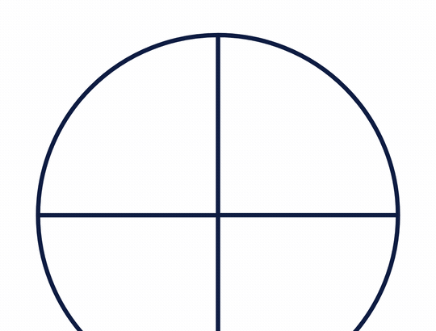

1-minute video · captions on screen
What it is
More slices means smaller slices. That's the first idea students need.
- Compare: one half is bigger than one fourth, even though 4 is bigger than 2.
- Equal fractions: two fourths covers the same part of the circle as one half.
- Bigger than 1: fill one circle, then keep going in the next. Read it as a fraction and as a mixed number.
How to use the tool
- In Set up, pick how many circles and how many slices in each.
- Drag a slice from the tray into a circle, or drag across a circle to shade it.
- Fill one circle before starting the next.
- Read the shaded amount below. It shows the fraction and the mixed number.

If a circle is full, or a slice is the wrong size for that circle, the tool says so. Under More options, each circle can have its own number of slices, which is handy for comparing thirds with fourths.
Try this with your class
Show 11 fourths. How many whole circles is that?
- Pick 3 circles with 4 slices each.
- Shade 11 slices, filling each circle before the next.
- Two full circles and 3 more slices: 2 and three fourths. Ask: how did the circles help you see it?
Watch for
Counting slices without the whole."I shaded 3" isn't a fraction yet. Ask: 3 out of how many make one circle?
Bigger denominator, bigger fraction.Put one half next to one fourth. More slices, smaller slices.
Starting a new circle too soon.Fill the first circle first, or the mixed number won't match.
Try it yourself
Based on: Math Learning Center, how to use fraction circles · Edutopia, why 1/4 is less than 1/3 is less than 1/2.